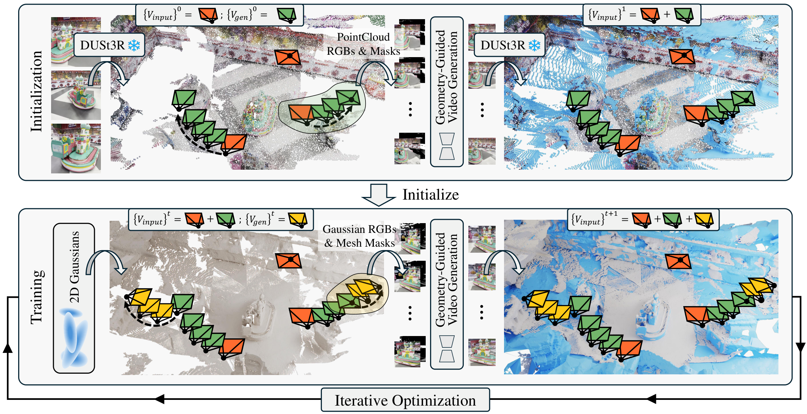
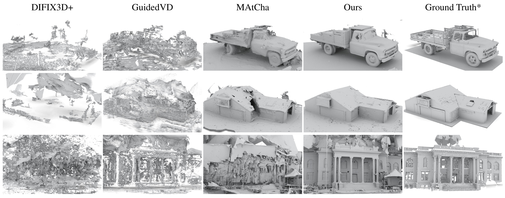
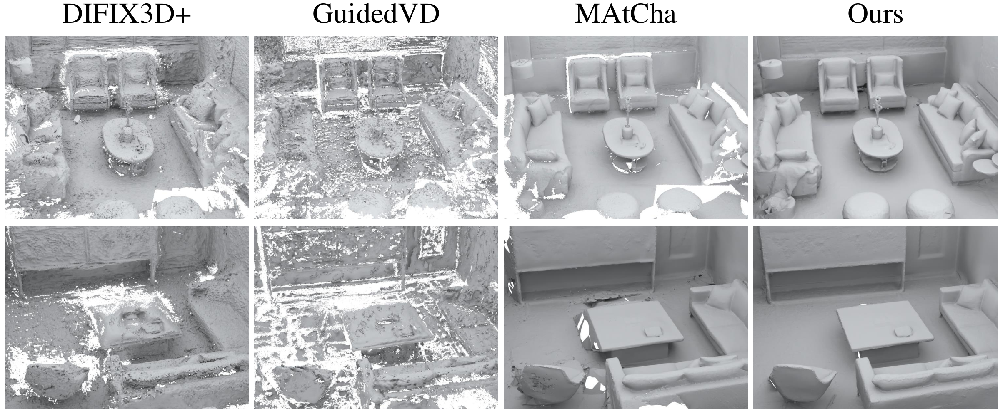
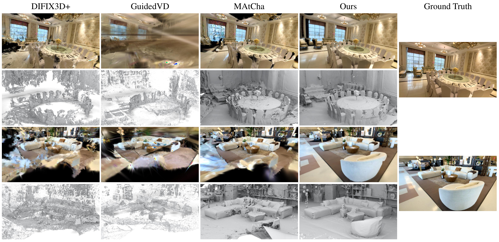
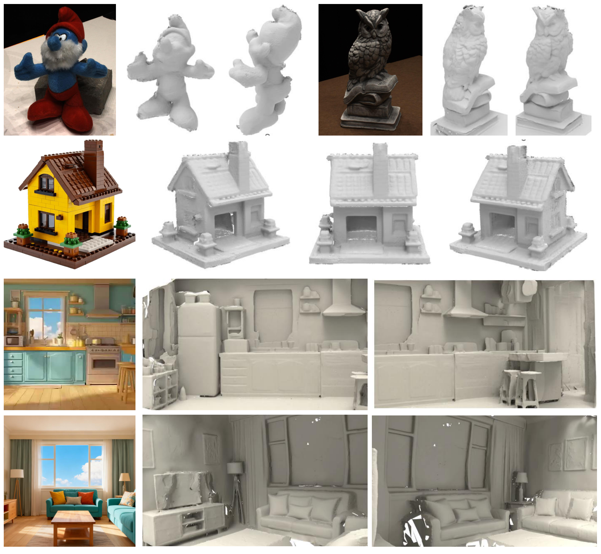

Gaussian Splatting has achieved remarkable progress in multi-view surface reconstruction, yet it exhibits notable degradation when only few views are available. Although recent efforts alleviate this issue by enhancing multi-view consistency to produce plausible surfaces, they struggle to infer unseen, occluded, or weakly constrained regions beyond the input coverage.
To address this limitation, we present VidSplat, a training-free generative reconstruction framework that leverages powerful video diffusion priors to iteratively synthesize novel views that compensate for missing input coverage, and thereby recover complete 3D scenes from sparse inputs. Specifically, we tackle two key challenges that enable the effective integration of generation and reconstruction. First, for 3D consistent generation, we elaborate a training-free, stage-wise denoising strategy that adaptively guides the denoising direction toward the underlying geometry using the rendered RGB and mask images. Second, to enhance the reconstruction, we develop an iterative mechanism that samples camera trajectories, explores unobserved regions, synthesizes novel views, and supplements training through confidence weighted refinement.
VidSplat performs robustly to sparse input and even a single image. Extensive experiments on widely used benchmarks demonstrate our superior performance in sparse-view scene reconstruction.

Given sparse input views, we sample novel camera trajectories and employ a camera-controlled video diffusion model (VDM) with our geometry-guided denoising strategy to generate additional views. In the initialization stage, RGB and mask images rendered from point cloud are used as VDM inputs, and the generated views are used to complete the initial point cloud. In the training stage, Gaussian-rendered RGBs and mesh-rendered masks are used as inputs, and the generated views are used to expand the training view set.




@inproceedings{vidsplat2026,
title = {VidSplat: Gaussian Splatting Reconstruction with Geometry-Guided Video Diffusion Priors},
author = {Anonymous},
booktitle = {ACM SIGGRAPH 2026 Conference Proceedings},
year = {2026},
}